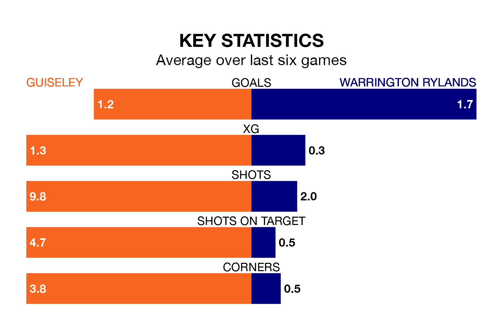

Guiseley welcome Warrington Rylands to Nethermoor Park on Saturday looking to pick up points to end their three-game losing streak.
Guiseley's struggles have left them with six points from their last six Northern Premier League matches, while their opponents have earned 13 from a possible 18.
Warrington Rylands are third in the table after 35 games, of which they have won 18 and drawn 12, earning 66 points.
Guiseley are seven places behind the visitors in 10th, with 16 wins and seven draws putting them on 55 points.
With 62 goals in 35 games so far this season, the Lions are scoring more than average in the league with 1.8 goals per game. And they are conceding fewer than average, letting in 54 goals at a rate of 1.5 per game.
Warrington Rylands, meanwhile, are average scorers, with 1.6 goals per game. They have conceded 1.1 goals per game.
In the last three years, Guiseley and Warrington Rylands have played each other on three occasions. They won one each, and they drew once.
Their last meeting was on November 4, when Guiseley won 1-0 away.
Guiseley's last match was on Saturday, a 3-2 loss against Lancaster City.
Warrington Rylands beat Marine 2-0 last time out, on Monday.
Updated: 16:41 (UTC), 04/04/24